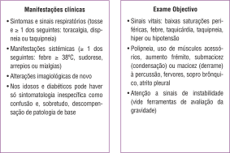

PNEUMONIA: definições
Pneumonia da comunidade (PAC):
início fora de meio hospitalar ou até às 48h de internamento.
Pneumonia adquirida em meio hospitalar (nosocomial):
início 48h após admissão em internamento ou até 90 dias após a alta (exclui ca- sos em incubação na altura da admissão, inclui pneumonia associada ao ventilador- 48 a 72h após EOT).
Pneumonia associada aos cuidados de saúde:
doentes não hospitalizados, mas com extenso contato com tratamentos médicos (1 ou mais dos seguintes: terapêutica intravenosa, tratamento de feridas, quimioterapia intravenosa nos últimos 30 dias, residente em lar ou instituição de saúde, internamento hospitalar por mais de 2 dias nos 30 dias anteriores, tratamento em clínica de hemodiálise nos 30 dias anteriores).
Etiologia mais provável de acordo com condição clínica
Pneumonia da comunidade: Influenza, S. pneumoniae, S. aureus, H. influenzae, S. pyogenes
Idade > 65 anos: S. pneumoniae
Residente em Lar: S. pneumoniae, bacilos entéricos Gram negativos, H. influenzae, S. aureus, anaeróbios e C. pneumoniae
Fumador/DPOC: S. pneumoniae, H. influenzae, M. catarrhalis, Legionella spp.
Doença estrutural pulmonar:
P. aeruginosa, Burkholderia cepacia, S. aureus
Alcoolismo:
S. pneumoniae, bacilos Gram negativos e anaeróbios
Aspiração:
Anaeróbios, bacilos Gram negativos, S. aureus
Toxicofilia EV:
Staphylococcus spp., anaeróbios, M. tuberculosis
Internamento hospitalar no ano prévio:
S. pneumoniae (estirpes penicilino-resistentes)
Internamento hospitalar nas 2-4 semanas anteriores:
Bacilos entéricos Gram negativos
Internamento em UCI:
P. aeruginosa, Acinetobacter spp., Enterobacter spp., MRSA
Esplenectomizados:
S. pneumoniae e outros Streptococcus, H. influenzae
Imunosupressão:
P. jirovecii, CMV, Aspergillus spp
Exposição a pássaros:
C. psittaci
Exposição a gado ou gatas grávidas:
C. burnetti
